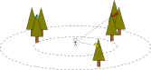

Manual Point Count
Manual + Automatic Point Count

Point Count

Listen to birds
Signal Classification
\[ X = \{(y_i, x_i)\}, i=1, \dots, N \]
\[ w = \arg\min_{w} \sum_{(y, x) \in X} loss(f(x), f_w(x)) \]
Feature Extraction
- Reduce the size of the input
- Trade-off between separability and contraction
\[ \text{if } \Phi(x) \neq \Phi(x') \text{ then } f(x) \neq f(x') \]
Aim & Questions
- Aim: Improve upon the state-of-the-art
- Can deep residual neural networks learn to classify bird species based on audio recordings, and how well do they perform?
- Can multiple-width frequency-delta data augmentation be used to improve how well the model generalizes?
- Can meta-data fusion be used to improve the classification accuracy of the model?
Preprocessing

Same Class Augmentation

Noise Augmentation